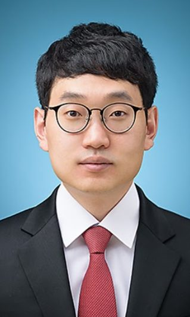

Principal investigator
YoungBin Kim 김영빈
Associate Professor, Graduate School of Advanced Imaging Science, Multimedia & Film (GSAIM), Chung-Ang University
YoungBin Kim directs the Intelligent Information Processing Lab at Chung-Ang University. His research spans natural language processing, large language models, and multimodal AI, with a focus on trustworthy AI (hallucination detection and mitigation, machine unlearning, and bias mitigation) and efficient language models. His group publishes at venues including ACL, EMNLP, NAACL, AAAI, CVPR, and ECCV.
He received his B.S. and M.S. in Computer Science from Korea University in 2010 and 2012, and his Ph.D. in Visual Information Processing from Korea University in 2017. He joined Chung-Ang University in 2018.